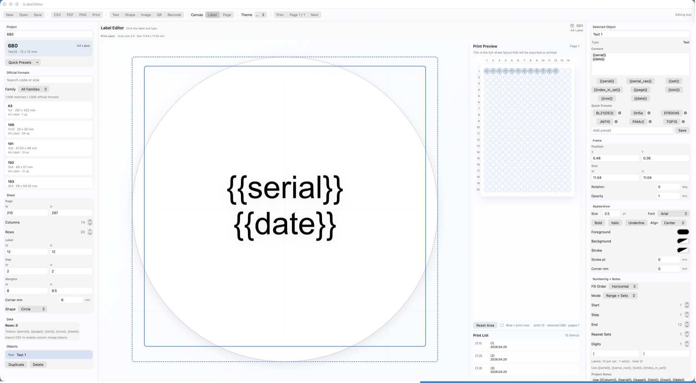
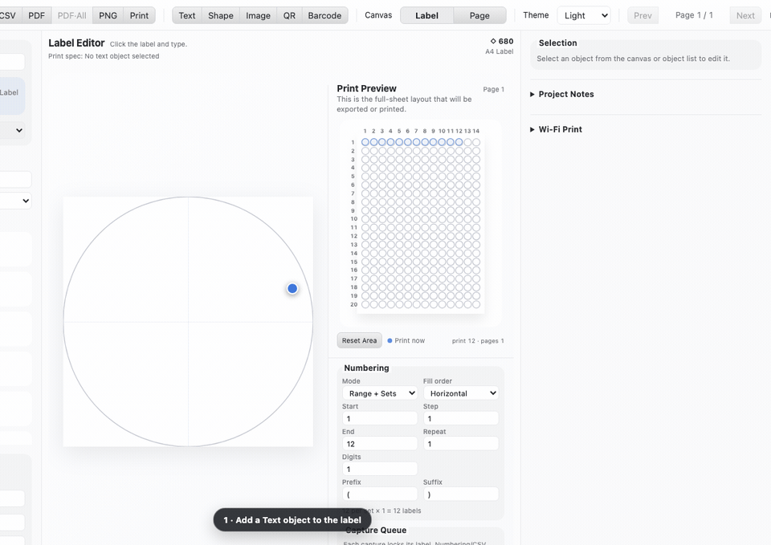

1,006가지 시트 포맷 내장
iLabel 공식 카탈로그 전체가 앱에 들어 있습니다. 카탈로그에 없는 용지는 커스텀 시트나 롤 라벨로 직접 정의할 수 있고, 원형 라벨은 활성 칸도 실제 모양 그대로 표시됩니다.
iLabel Studio / Precision in print
iLabel Studio는 label.kr iLabel 전지를 위한 정밀 라벨 편집·인쇄 앱입니다. 커스텀 시트와 롤 라벨까지 지원하고, 리치 텍스트·머지 데이터·일련번호·캡처 인쇄 대기열을 하나의 프로젝트 포맷에 담습니다.
무료 다운로드 · macOS 14+, Windows x64, Linux x64

그냥 라벨 메이커가 아닙니다.
붙이는 모든 것을 위한 스튜디오.
포맷을 고르고 텍스트와 이미지를 얹으면, 라벨 한 장이 트레이를 떠나기 전에 각 칸에 정확히 무엇이 인쇄될지 미리 확인할 수 있습니다.
iLabel 공식 카탈로그 전체가 앱에 들어 있습니다. 카탈로그에 없는 용지는 커스텀 시트나 롤 라벨로 직접 정의할 수 있고, 원형 라벨은 활성 칸도 실제 모양 그대로 표시됩니다.
폰트, 폰트 임베딩, 굵게·기울임·밑줄·취소선, 위·아래 첨자, 글자색과 하이라이트까지 — 선택 범위 단위로 적용되고 인쇄에도 동일하게 렌더링됩니다.
프레임 간격, 정렬, 칸별 배치를 실제 단위(mm)로 지정합니다. 캔버스에서 잡은 레이아웃이 종이 위에 그대로 내려앉습니다.
{{serial}} 같은 머지 토큰이 인쇄 시점에 라벨별로 채워집니다.
iLabel Studio는 macOS에서 네이티브 SwiftUI 앱으로, Windows와 Linux에서는 동등한 기능의 데스크톱 앱으로 실행됩니다. 모든 에디션이 같은 프로젝트 포맷을 공유해 리치 텍스트, 임베딩된 폰트, 머지 데이터, 넘버링, 배치, 캡처된 인쇄 대기열이 파일과 함께 이동합니다.
DMG를 내려받아 iLabel Studio를 Applications에 드래그하면 끝. Apple silicon과 Intel을 모두 지원하는 유니버설 바이너리입니다.
DMG 다운로드커밋마다 패키징되는 최신 빌드를 바로 내려받으세요. Windows는 NSIS 설치본과 포터블 EXE, Linux는 AppImage와 DEB가 들어 있습니다.
Windows·Linux zip은 main 브랜치 최신 커밋에서 GitHub Actions가 패키징한 빌드입니다. 개발용 Windows 빌드는 서명되어 있지 않아 SmartScreen 경고가 표시될 수 있습니다. Linux AppImage는 실행 권한이 다운로드 후에도 유지되도록 tar.gz로 포장되어 있습니다.
label.kr의 iLabel 공식 포맷 1,006종이 모두 내장되어 있고, 카탈로그에 없는 용지는 시트 지오메트리를 직접 정의하거나 롤 라벨로 설정할 수 있습니다.
네. iLabel Studio는 같은 앱의 새 이름입니다. 기존 iLabel2Mac을 종료하고 iLabel Studio를 설치한 뒤 옛 앱을 제거하면 됩니다. 기존 프로젝트와 앱 설정은 그대로 호환됩니다.
네. 모든 에디션이 하나의 프로젝트 포맷을 공유합니다. 리치 텍스트, 임베딩된 폰트, 머지 데이터, 넘버링, 배치, 캡처된 인쇄 대기열까지 전부 포함됩니다.
페이지 미리보기에서 빈 칸을 지정한 뒤 인쇄 회차를 캡처하세요. 캡처 대기열이 이미 사용한 칸을 기억하고 있어, 다음 회차는 정확히 이어지는 위치에서 시작됩니다.
아니요. GitHub에서 내려받아 바로 인쇄하세요.